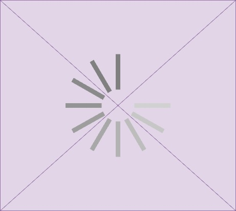

Les Hélices de l’Innovation
Le Lorraine Fab Living Lab® favorise les échanges entres les differents helix de l’Innovation….
Universitaires
Que ce soit par l’utilisation des dispositifs de maquettage et prototypage ou par la facilitation du travail collaboratif comme pour les ateliers IngEXys., Le LF2L® sert de support à une diversité de projets. Des chercheurs permanents du laboratoire travaillent entre autres choses sur la capacité à innover des PME-PMI, le recyclage des matières premières pour la fabrication additive, la prise en compte et l’implication des utilisateurs dans les projets (Living lab), l’évaluation par l’usage, des méthodologies collaboratives pour la smart city, des dispositifs immersifs, la créativité, les espaces d’innovation.
Le LF2L® accueille ainsi les travaux de la Chaire de Recherche PRINCIP (labélisée par le Fond pour l’Innovation dans l’Industrie) dédiée aux PME, et de la Chaire Collaborative REVES (Renaissance Ecologique des Villes), supportée par ENEDIS, EDF, la Métropole du Grand Nancy, la CCPHVA, déployant le concept de Smart City pour proposer des solutions aux nouveaux enjeux sociétaux que vivent les villes et les territoires.
Vous êtes étudiant à l’ENSGSI ?
Le Lorraine Fab Living Lab® vous ouvre ses portes dans le cadre de cours pédagogiques.
- Pour une utilisation ponctuelle des machines (type FabLab : découpe laser, imprimante 3D, CNC, etc.) dans le cadre d’un projet : complétez la charte d’utilisation des ressources du LF2L et envoyez là par email à Marc Meillasson (marc.meillasson{at}univ-lorraine.fr). Ils vous confirmeront la réservation et la disponibilité des espaces et ressources demandés.
- Pour vos projets personnels : rejoignez l’association GSI Lab – tous les jeudis de 13h30 à 17h30.
Le GSI Lab est une association gérée par des élèves de l’ENSGSI. Fondée en 2015, elle permet à ses adhérents de créer des objets et de réaliser des projets personnels au sein du Lorraine Fab Living Lab®. L’utilisation des machines a également un but pédagogique et permet aux étudiants d’acquérir des compétences tout au long de la réalisation de leurs projets.
Vous êtes étudiant.e à l’Université de Lorraine?
Les ressources et compétences présentes dans le LF2L® permettent d’interpeller dans les différents projets de l’UL. Pour plus d’informations contact: erpi-lf2l-equipe@univ-lorraine.fr
Vous êtes chercheur en france ou à l’étranger?
La plateforme LF2L® vous intéresse dans le cadre de vos recherches, vous souhaitez collaborer avec le laboratoire ERPI et/ou participer à l’un de ses programmes de recherche relatives à l’ingénierie collaborative, la Smart City, les dispositifs immersifs, un projet de R&D, de financement de l’innovation ou de mécénat:
Contactez Laurent Dupont : l.dupont[at]univ-lorraine.fr
Pour savoir plus sur notre travail, consultez nos publications scientifiques
Institutions et collectivités territoriales
Fort de l’universalité de l’Université, la plate-forme LF2L® permet d’accueillir et développer des « Partenariats Public - Privé - Population » tel que le Lorraine Smart Cities Living Lab ou la Chaire collaborative REVES (Renaissance Écologique des Villes) portée par la Fondation NIT de l’Université de Lorraine. Le Lorraine Fab living Lab® a vocation à accompagner les territoires et ses institutions dans leurs projets d’innovation collaborative au service des citoyens.
Le LF2L® organise et met en œuvre des ateliers citoyens, contribue à la science citoyenne, participe à des événements de diffusion scientifiques et technique. Par example, le LF2L® contribue à la mise en œuvre et à l’évaluation de « démonstrateurs Smart City » tel que le Smart City Living Lab Alzette Belval.
Fruit de ses collaborations, la Métropole du Grand Nancy a été élue Territoire Innovant OR en décembre 2016 par les Interconnectés 2016 grâce au projet VélOstan Connecté.
Entreprises
Vous êtes une entreprise ? Start-up, PME-PMI ou Grand Groupe? Conçu avec ses partenaires industriels, le Lorraine Fab Living Lab® (LF2L®) vous ouvre ses portes pour des partenariats sur-mesure adaptés à vos besoins. Venez vivre votre expérience d’innovation !
- Pour une utilisation ponctuelle des machines (type FabLab : découpe laser, imprimante 3D, CNC, etc.)
- Pour une expertise intégrant les usagers, la métrologie des usages (eye-tracking, capteurs physiologiques, etc.)
- Pour une expertise ou un savoir-faire en recyclabilité de la matière, Green FabLab, impression 3D
- Des questions relatives à l’ingénierie collaborative, la Smart City, les dispositifs immersifs, un projet de R&D, de financement de l’innovation ou de mécénat scientifique et technique.
En travaillant avec le LF2L, vous bénéficiez de l’expérience du laboratoire ERPI qui depuis plus de trente-cinq ans mène des recherches dans la transformation des organisations et des territoires à travers des processus innovatifs. Ses activités se concentrent sur deux thèmes de recherche: l’évaluation de l’acceptabilité dans les étapes amont de l’innovation (méthodologies et technologies) et l’identification, la modélisation, l’intégration et la capitalisation de connaissances et compétences dans les étapes amont des projets innovants.
De plus, en vingt ans l’école de l’innovation associée au laboratoire ERPI, l’ENSGSI, a démontré sa capacité à enseigner et à diffuser les outils, méthodes et aptitudes favorables à l’émergence de l’innovation.
Makers
La révolution de la communication numérique est derrière nous. Nous vivons à présent la révolution de La Fabrication personnelle ou DIY. Pour s’ouvrir au plus grand nombre, le Lorraine Fab Living Lab® met à disposition tous les jeudis soirs ses locaux et ses ressources à l’association NYBI. L’Université de Lorraine permet ainsi à tous ceux qui veulent fabriquer par eux-mêmes, découvrir de nouvelles technologies, apprendre à les utiliser, de bénéficier du matériel et des espaces issus de la recherche.
Le NYBI accueille tous les publics au LF2L tout les jeudis, de 19h à 24h, pour faire découvrir l’univers des FabLabs. Les personnes intéressées pour rejoindre l’association sont les bienvenues en début de soirée pour découvrir les lieux et les membres. Pour les membres de l’association, le LF2L est disponible jusqu’à minuit.
Contact et information : NYBI.CC
Créez votre espace d’innovation, adapté à votre écosystème !

Fort de ses 15 années d’expérience, le LF2L et l’équipe de l’ERPI vous accompagne dans la création de votre espace d’innovation sur mesure : parrainage, conseils, partenariat, recherche. En France, mais aussi à l’étranger !. Pour plus de détails: En France, mais aussi à l’étranger !
Osorio F., Dupont L., Camargo M., Palominos P., Peña J.I., et al.. Design and management of innovation laboratories: Toward a performance assessment tool. Creativity and Innovation Management, Wiley, 2019, 28 (1), pp.82-100. hal-01987047